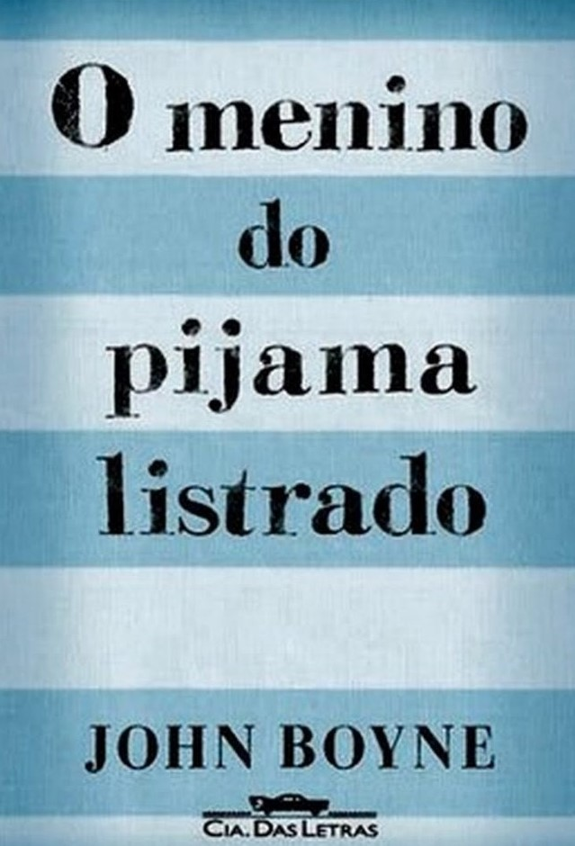

|
O Ódio que Você Semeia
Autora: Angie Thomas
Starr aprendeu com os pais, ainda muito nova, como uma pessoa negra deve se comportar na frente de um policial.
Não faça movimentos bruscos.
Deixe sempre as mãos à mostra.
Só fale quando te perguntarem algo.
Seja obediente.
Quando ela e seu amigo, Khalil, são parados por uma viatura, tudo o que Starr espera é
que Khalil também siga essas regras. Um movimento errado, uma suposição e os tiros
disparam. De repente o amigo de infância da garota está no chão, morto.
Em luto, indignada com a injustiça tão explícita que presenciou e vivendo em duas
realidades tão distintas (durante o dia, estuda numa escola cara, com colegas brancos
e ricos - no fim da aula, volta para seu bairro, periférico, um gueto
dominado pelas gangues e oprimido pela polícia), Starr precisa descobrir a sua voz.
Precisa decidir o que fazer com o triste poder que recebeu ao ser a única testemunha
de um crime que pode ter um desfecho tão injusto como seu início.
|
 |
O Menino do Pijama Listrado
Autor: John Boyne
Bruno tem nove anos e não sabe nada sobre o Holocausto e a Solução Final contra os judeus.
Também não faz idéia que seu país está em guerra com boa parte da Europa, e muito menos que
sua família está envolvida no conflito. Na verdade, Bruno sabe apenas que foi obrigado a
abandonar a espaçosa casa em que vivia em Berlim e a mudar-se para uma região desolada,
onde ele não tem ninguém para brincar nem nada para fazer. Da janela do quarto, Bruno pode
ver uma cerca, e para além dela centenas de pessoas de pijama, que sempre o deixam com frio
na barriga.
Em uma de suas "aventuras" Bruno conhece Shmuel, um garoto do outro lado da cerca que curiosamente
nasceu no mesmo dia que ele. Conforme a amizade dos dois se intensifica, Bruno vai aos poucos
tentando elucidar o mistério que ronda as atividades de seu pai.

|
|
A Cabana
Autor: William P. Young
Durante uma viagem de fim de semana, a filha mais nova de Mack Allen Phillips é
raptada e evidências de que ela foi brutalmente assasinada ão encontradas em uma cabana
abandonada.
Após quatro anos vivendo numa tristeza profunda causada pela culpa e pela saudade da menina,
Mack recebe um estranho bilhete, aparentemente escrito por Deus, convidando-o a voltar à
cabana onde aconteceu a tragédia.
Apesar de desconfiado, ele vai ao local numa tarde de inverno e adentra passo a passo o cenário
de seu mais terrível pesadelo. Mas o que ele encontra lá muda o seu destino para sempre.
|
 |
A Lista de Schindler
Autor: Thomas Keneally
Durante a Segunda Guerra Mundial, enquanto o regime nazista enviava milhares de prisioneiros
aos fornos de Auschwitz, o industrial alemão Oskar Schindler abrigava centenas de judeus em sua
fábrica, de onde ele finalmente os transferia em segurança para a Tchecoslováquia.
Um lugar na lista de Schindler significava a única chance de sobrevivência para um prisioneiro
judeu. Oskar Schindler, o herói do Holocausto, é retratado de modo inédito e comovente pelo
romancista Thomas Keneally.
|
|
Extraordinário
Autor: R.J Palacio
August Pullman, o Auggie, nasceu com uma síndrome genética cuja sequela é uma
severa deformidade facial, que lhe impôs diversas cirurgias e complicações
médicas. Por isso, ele nunca havia frequentado uma escola de verdade...
até agora. Todo mundo sabe que e difícil ser um aluno novo, mais ainda quando
se tem um rosto tão diferente. Prestes a comecar o quinto ano em um colegio
particular de Nova York, Auggie tem uma missão nada fácil pela frente:
convencer os colegas de que, apesar da aparência incomum, ele é um menino
igual a todos os outros.

|
|
Black Bird
Autora: Anna Carey
Salvador levava uma vida tranquila e descomplicada ao lado de seu pai adotivo
gay e de Sam, sua melhor amiga. Porém, o último ano do ensino médio vem
acompanhado de mudanças sobre as quais o garoto não tem nenhum controle,
como ímpetos de raiva que ele não costumava sentir. Além disso, Salvador
tem que lidar com a iminente morte da avó, com uma tragédia repentina que
acontece na vida de Sam e com o fato de seu pai estar se reaproximando de um
ex-namorado. Em meio a esse turbilhão de sentimentos, que vão do luto ao amor
e da amizade à solidão, Sal passa a questionar sua própria origem e identidade,
e tenta encontrar alguma lógica para a sua vida - uma tarefa que parece quase
impossível.
|